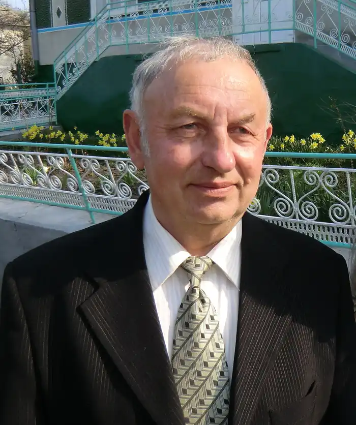
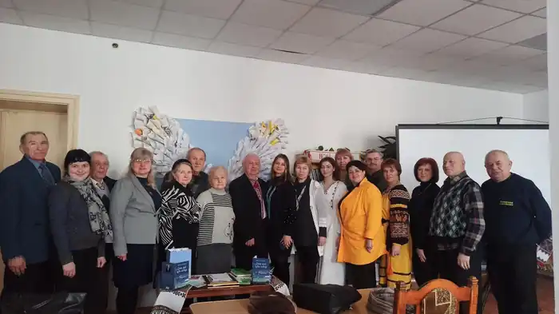

ЗЕМЛЯ ЙОГО НАЗВАЛА СВОЇМ СИНОМ
"Я не для того в світ прийшов, щоб нидіти, Я з повним правом в світ прийшов, щоб жити. Все, що навколо твориться, розгледіти І в той мільярдний хор свій голос влити". У цих поетичних рядках наш відомий земляк, уродженець с. Обельниці, поет-пісняр, композитор, член Національної спілки журналістів України Дмитро Кубарич лаконічно та промовисто виклав увесь зміст свого життя – цікавого, динамічного та небайдужого, сповненого радостей і болю, перемог і труднощів та головне – палкої любові до рідного краю, поваги до людей поруч. Великий життєлюб та оптиміст, неординарна творча особистість із багатим життєвим досвідом, щирий патріот України та своєї малої батьківщини – саме такі риси Дмитра Кубарича найбільше мені припали до душі за роки нашої праці і спілкування в народній газеті Рогатинщини "Голос Опілля", у первинній організації НСЖУ. Завжди захоплювалася його талантом володіти Словом, майстерністю віршування, багатою мовою. Приємне враження справила й оця, п'ята за ліком, чи не найґрунтовніша за обсягом збірка "Літа мої – гуси-лебеді", до якої ввійшли як нові твори, так і частина вже опублікованих у попередні роки: поезія, пісні та кілька газетних публікацій. Книга чітко структурована, для зручності читачів автор пропонує багатий творчий доробок у тематичних розділах. Поезії Д. Кубарича багатогранні, як і наше земне життя. У них автор радіє і сумує, захоплюється і мовить до людей про те, що тривожить душу, оспівує красу Рогатинського Опілля, рідного села: "Земля мене навчила говорити… і подарувала серце, щоб любити. Земля мене назвала своїм сином і я довіку буду їй служити…" Патріотична тематика, проблеми заробітчанства, багато інших важливих аспектів буття поетичними рядками лягли з-під пера митця на папір, взиваючи до нас, читачів, згадати минуле, задуматися над сьогоденням та спрямувати погляд у день прийдешній, визначити найголовніші пріоритети для себе, своєї сім'ї, родини, для рідної матері-України. Особливе місце в збірці займають пісенні твори, багато з яких вже давно "пішли поміж люди" – полюбилися шанувальникам народного мистецтва своїм ліризмом, задушевністю, милозвучністю та неоднарозово звучали і продовжують звучати зі сцени, даруючи незабутні миті спілкування з прекрасним. "Ліг туман над річкою Якось неохоче. Місяць посміхається Весело мені. Чом так часто снились ви, Рогатинські ночі? Я вас часто згадував В дальній стороні" – читаючи ці рядки пісні, так і хочеться тихо і неквапливо підхопити ніжну мелодію та поринути думкою у прекрасний світ дитинства і юності… Щодо самого автора, то Дмитро Йосипович Кубарич народився 06 січня 1944 року у мальовничому опільському селі Обельниця Рогатинського району Івано-Франківської області. У 1961 році закінчив середню школу в Бурштині, а у 1964 році — Львівське музично-педагогічне училище ім. Філарета Колесси. У 1971 році закінчив факультет журналістики Львівського національного університету ім. Ів. Франка. Два роки автор пропрацював учителем музики і співів у Кашперівській середній школі, що в Тетіївському районі на Київщині (1964-1966 рр) та п'ять років у Тетіївській районній газеті (у 1966-1971 роках). З 1971-го аж до квітня 2015-го – у Рогатинських газетах "Зоря" і "Голос Опілля". В подальшому все його свідоме і творче життя пов'язане з рідним опільським краєм. Глибока, з чистою джерельною водою криниця творчості Дмитра Кубарича, переконана, довгі роки даруватиме радість і насолоду спраглим із неї напитися. Ольга Конопада, секретар Рогатинської первинної організації НСЖУ, член правління обласної Спілки журналістів НСЖУ, редактор газети "Голос Опілля". Народний гонорар Понад півстоліття Кубарич Дмитро Йосипович дарує читачу свої поетичні твори. Поет завжди перебуває серед людей, через своє серце перепускає їх страждання і радість, досягнення і негаразди. Він бачить те, що інші просто не помічають, вміє знайти зернинки-перли, які проростають справжніми народними шедеврами. Мова автора народна. Немає в його віршах лексики задля рими, тарабарщини, просторіччя. Власні спостереження, знахідки, висновки, уміння бачити головне – основні ознаки творчості досвідченого майстра художнього слова. Дмитро Йосипович має власний стиль, послуговується різноманітними засобами написання творів, вплітає у свої вірші і пісні різнобарвні переливи фольклору рідного краю, притаманного Опіллю. Дмитро Кубарич – прекрасний музикант. Він десятки років на громадських засадах був керівником художньої самодіяльності у с. Обельниця. Під його керівництвом у 1972 році художня агіткультбригада Обельницького сільського клубу була визнана Лауреатом республіканського конкурсу самодіяльного мистецтва і нагороджена великою бронзовою медаллю, а її керівник – нагрудною бронзовою медаллю. Зі словом і піснею крокує Д. Кубарич по життю. Він автор не лише поетичних збірок "Собори наших душ" (2004р.), "Поговори зі мною" (2009 р.), "Зустрічі і розлуки" (2019 р.), збірки гуморесок "Подивіться що сі робить" (2011 р.), а й кількох десятків пісень. Окремі з них, як от "За тебе, Україно, помолюсь", "Здрастуй Рогатин", "Опільська пісня", "Рогатинські ночі", "У нас в Обельниці", "Обельничаночка" та інші, вже давно полюбились слухачам та глядачам, звучать в концертах. У творчості Дмитра Кубарича два крила. Однокрил високо не злітає, далеко не летить. А поет, в однаковій мірі володіє мистецтвом творення лірики життя і Божим даром поета-пісняра. В його активі задушевні пісні, дотепна лірика, актуальний гумор тощо. А скільки добрих людей отримали поетичні вітання від поета з нагоди визначних дат, дня народження і просто так: від земляка, що безмежно закоханий у рідний край, неньку-Україну і дорогий співмешканців. Шанують люди дотепне слово Дмитра Йосиповича, вірять йому й насолоджуються його талантом. А це і є найбільший гонорар для автора, в основі якого – безмежна любов до ЛЮДИНИ. Поважний вік Кубарича Д.Й. не є перешкодою у його творчій діяльності, а навпаки: він продовжує жити і творити, дарувати читачу радість буття, за що цілком заслужено у 2014 році відзначений медаллю Івано-Франківської ОДА та облради "За заслуги перед Прикарпаттям". Його влучне багатогранне слово пересіяне через народне сито, – серед людей, звучить зі сцени закладів культури. Воно живе, бо сказано Народним майстром, Великим українцем і патріотом. Віктор Бондаренко, поет, член Національної спілки письменників України.